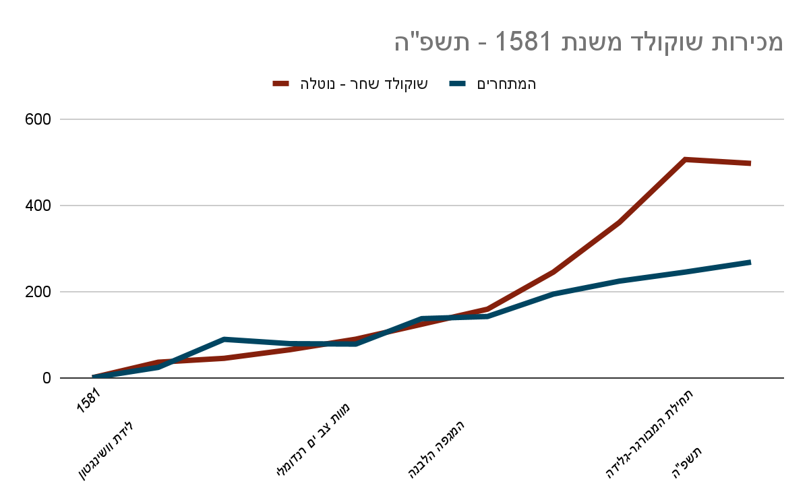

ההסבר שלי, האדם שכותב את זה (לא דניאל.), לכל הדברים אשר הם גם דברים וגם אפילו קיימים, או לא, הם לא בהכרח קיימים, למרות שהם כנראה קיימים. (feat. ליאור "אגוזים" פניברד)
חלק 1 - ההסבר שלי לתפוחים
למה תפוחים קיימים? למה הם נופלים? ואיך אסף "אצבע קינדר" כהן קשור לזה?
נתחיל בשאלה הראשונה, למה תפוחים קיימים? ההסבר שלי הוא שפעם, עוד לפני שתפוחים היו קיימים עידן, הבחור מהמעלית, קרא ספר כמו שהוא עושה בדרך כלל במעלית. הוא קרא את הספר שלו ופתאום כשהמעלית פשוט לא זזה כי אייזיק ניוטון עוד לא המציא את התנועה המאוד בסיסית של לזוז למטה. עידן התעצבן מזה, שזה דבר הגיוני, אז הוא פשוט הלך לקח חול עם מים ועשה אותו בצורה של עץ קטן, והוא שתל את העץ הקטן מחול. במקרה העץ הזה היה עץ תפוחים.
למה תפוחים נופלים? אז כמה שנים אחרי שעידן שתל את עץ התפוחים, איש שאתם אולי מכירים הלך לקרוא ספר מתחת לעץ. קראו לאיש הזה "מר אייזיק ניוטון" והוא היה בייסקלי אל, אבל הוא לא ידע את זה עדיין. אז עידן, שעדיין עבד על התוכנית הגדולה והמרושעת שלו לגרום למעלית לזוז גם למטה ולא רק למעלה, נתן כיף לעץ - מה שגרם לתפוח אחד בודד ליפול על מר אייזיק ניוטון. ניוטון שהיה די מטומטם ופשוט היה אל קלט שהתפוח נפל, ואמר "אהא, דברים בטח יורדים למטה, זה בטוח מה שקורה.", בגלל היות ניוטון אל, דברים התחילו לרדת למטה, כמו המעלית של עידן. איפשהו בעתיד אנשים יתחילו לקרוא לפעולה שדברים יורדים בה למטה "ליפול", ואיזה מישהו ימציא שזה קורה בגלל גרביטציה, בלי לדעת אף פעם שזה בעצם פשוט כי ניוטון רצה.
איך אסף "אצבע קינדר" כהן קשור לזה? אז בעצם כשמישהו ומישהי אוהבים אחד את השני מאוד מאוד.
חלק 2 - ההסבר שלי לחלב חזירים
מה זה חלב חזירים? כמה שומן הוא מכיל? ואיך אסף "אצבע קינדר" כהן קשור לזה?
חלב חזירים הוא חלב המיוצר מחזירים, האל הידוע לשמצה כהאיש שגילה שהדברים יורדים למטה "מר אייזיק ניוטון" גילה גם את זה, למרות שנותנים לו הרבה פחות קרדיט על הגילוי האדיר הזה שממש שינה את האנושות, אני הייתי אומר שזה שינה את האנושות אפילו יותר מגילוי הדבר הזה כשהדברים יורדים למטה.
אני לא בטוח כמה שומן חלב חזירים מכיל, אבל אני הייתי מניח שהוא מכיל 8.5% שומן לעומת 3.5% בחלב פרה. כמו כן, להגיד שיש בחלב שומן זה מאוד מעליב לחלב, שהוא כמובן לא מאוד חכם כי הוא חלב ואין לו מוח. אז כשאומרים לו שיש בו 8.5% שומן לעומת ה3.5% שיש בחלב פרה, זה מאוד מעליב. זה כמו להגיד לו שהוא מאוד שמן, וזה לא נחמד במיוחד.
איך אסף "אצבע קינדר" כהן קשור לזה? אז כשאיש הולך הולך הולך, ואז בום… נופל שניצל.
חלק 3 - ההסבר שלי לאלים
למה אלים הם כל כך אכזריים? למה סבתא שלי מתה? ומי זה משה?
בזמן שרבים מאמינים שהאלים הם דבר אכזרי, זה רק תומאס ג'פרסון, שהוא בעצם האל היחיד מתוך רבים שאחראי לדברים אכזריים, והוא אחראי לכל אחד מהם. חשוב לא להתבלבל בין תומאס ג'פרסון האל ותומאס ג'פרסון האב המייסד, שהוא לא אל. והאל תומאס ג'פרסון הוא כל כך אכזרי אך ורק בגלל שבא לו והוא רצה, כי שיעמם לו ביום שלישי, ה 12 באוגוסט 2004.
סבתא שלך לא באמת מתה בגלל אלים, זה בלבול שקורה הרבה דניאל. אבל לא, זה קרה דווקא בגלל שאול, האיש הזה שעומד על הגג של הבניין ומאמין שהוא האל של עננים בצורת סוס, אגב לאל העננים בצורת סוס האמיתי קוראים קלינט בכלל, והוא אישה. אבל בחזרה לשאלה, סבתא שלך מתה בגלל שאול, אוקיי דניאל? אתה יכול להפסיק לחקור את קלינט כל פעם שהיא עוברת ברחוב.
משה הוא אסף "אצבע קינדר" כהן.
חלק 4 - ההסבר שלי לכבאים
אם 1000 כבאים לא יכולים לכבות אותי, כמה כן? כמה כבאים לוקח להדליק מנורה? ואיך אסף "אצבע קינדר" כהן קשור לזה?
זה מאוד תלוי בכמה כיבוי ה-1000 כבאים עשו לך, דניאל, אותך דניאל הייתי אומר שהם כיבו די הרבה, אז הייתי אומר שאפילו 1001 כבאים יספיקו, אם לא אפשר ללכת על 1407, שזה גם כן מספר מכובד. אם 1000 כבאים לא עשו לכם שום כיבוי, זה ממש מדאיג, לכו לרופא.
לוקח באזור ה-7 כבאים על מנת להדליק מנורה, זאת לא ההתמחות שלהם ולכן הם ממש ממש גרועים בזה.
איך אסף "אצבע קינדר" כהן קשור לזה? נומ נומ נומ
חלק 5 - למה
למה?
ככה
חלק 6 - ההסבר שלי לחלק הקודם
למה עניתי "ככה", זה ידוע שהתשובה "ככה" היא תשובה לא לגיטימית? ואיך אסף "אצבע קינדר" כהן קשור לזה?
ככה זאת תשובה לגיטימית לגמרי לשאלה "למה?".
ואיך אסף "אצבע קינדר" כהן קשור לזה? א, ב, ג, ד, ה, ו, ז, כ, פאק זאת האות הלא נכונה
חלק 7 - ההסבר שלי לגרביים
למה גרב אחת תמיד נעלמת? למה גרביים מתלכלכות? ואיך אסף "אצבע קינדר" כהן קשור לזה?
גרב אחת תמיד נעלמת בגלל היצור הידוע לשמצה "קרליטילים". קרליטיל הוא מין גובלין קטן ומעצבן שגונב את הגרביים של כולם באמצע הלילה תמיד. הם ידועים בהיותם קטנים ומאוד מעצבנים, בעיקר כשהם גונבים גרב אחת מהרגל שלכם בזמן שאתם ישנים. הם עושים את זה כמובן בשביל לבנות את המקדש שלהם שעשוי מגרביים, והדרך היחידה להיפטר מהם זה בעזרת האל "שיגרו מיאמוטו" שגם יצר את המשחק הידוע "פורטנייט".
למה גרביים מתלכלכות? אני אישית הייתי אומר שהן מתלכלכות בגללך דניאל, אתה יצור מגעיל ולכלכת לי ולכל בן אדם אחר שאי פעם היה קיים, כל ה110 ביליון אנשים שאי פעם היו אתה לכלכת להם את הגרביים איכסה פיכסה דניאל אני שונא אותך.
איך אסף "אצבע קינדר" כהן קשור לזה? עדיף 1000 עזים מאשר סוס קטן אחד.
חלק 8 - ההסבר שלי לנגיף הפטיטיס D
איך אני נדבק בנגיף בכוונה? למה הנגיף הוא "D" ולא אות אחרת כמו "ג"? ואיך אסף "אצבע קינדר" כהן קשור לזה?
הנגיף לא נמצא המון במדינות מפותחות יותר, ובגלל זה בשביל להידבק בנגיף בכוונה צריך ללכת למדינה לא מפותחת כמו "הרפובליקה הדויד של וקרי" [ראו את חלק 10, דרכי שלטון למדינות], הידועה גם כאחת המדינות הלא מתקדמות שיש, ובוקרי צריך להתחיל לצרוך סמים על ידי שימוש במחטים מזוהמות, זאת הדרך הכי מהירה שהמדענים שלנו מצאו להידבק בנגיף הפטיטיס D בכוונה.
ביום תשע, כשהתחיל נגיף הפטיטיס D, האל הידוע כ"מר אייזיק ניוטון" החליט שהנגיף הזה צריך להיות "ג", אבל שאר האלים בוועדה לא הסכימו. לא הייתה לאלים שום סיבה מיוחדת, הם פשוט לא אהבו את האות "ג". מאוחר יותר הם הוציאו את האות "D" מכובע, וזה האות שנבחרה. הם עושים את זה עכשיו לכל נגיף, ככה נגיף הקורונה השיג את השם שלו, נגמרו הפתקים בכובע.
איך אסף "אצבע קינדר" כהן קשור לזה? יצא לך לדבר עם שרה לאחרונה?
חלק 9 - ההסבר שלי לצבעים
למה הם גזענים אל ירוק? למה עיפרון זה לא צבע? ואיך אסף "אצבע קינדר" כהן קשור לזה?
כשצבעים עושים פגישות חברתיות, בדרך כלל בבית של הצבע הידוע פשוט כ"אדום", הם בדרך כלל לא מזמינים את ירוק. זה בגלל שכשהם היו עוד רק בגן, ירוק אמר לאדום "אדום" מכיוון שזה היה שמו, ואדום ענה לו "מה", מה שכמובן ירוק ענה "-פליץ". אדום נעלב ומאז הוא לא מזמין את ירוק לפגישות החברתיות שלהם.
עיפרון זה כן צבע, העין האנושית פשוט לא יכולה לראות אותו, כמו כל עין אחרת, אפשר להריח את הצבע הזה רק עם המרפק, ואי אפשר להריח מהמרפק, אז בינתיים אף יצור חיי לא יכול להריח את הצבע עיפרון.
איך אסף "אצבע קינדר" כהן קשור לזה? אימוג'י של בקבוק
חלק 10 - ההסבר שלי לדרכי שלטון למדינות
מי זה דויד? למה דיקטטורה זאת דרך השלטון הכי טובה? ואיך אסף "אצבע קינדר" כהן קשור לזה?
דויד זה לא מישהו, זאת דרך השלטון הרביעית וחצי. הדרך עובדת ככה שלעומת קומוניזם, או דיקטטורה, או דמוקרטיה, פשוט רוצחים כל תינוק שביעי שנולד, וכל חמש שנים בוחרים ילד רנדומלי מכיתה ב'2 והוא נבחר להיות המנהיג של כל המדינה.
תשאלו כל בן אדם בצפון קוריאה אם הם נהנים מהדיקטטורה, הם יגידו שכן, זה כנראה כל כך טוב אם כל בן אדם שתשאלו יגיד לכם שאחלה לו.
אסף "אצבע קינדר" כהן יצר את דרך השלטון "דויד" ממקודם.
חלק 11 - ההסבר שלי לאגורות
האם לאוגר אגורות מאגרון יש אוגר? כמה אגורה אחת שוקלת? ואיך אסף "אצבע קינדר" כהן קשור לזה?
לכל אוגר אגורות מאגרון יש אוגר בארון, זאת גם כן תגלית שהאל הידוע בתור האל שגילה את הפעולה של דברים שזזים למטה, "מר אייזיק ניוטון" גילה. הוא גילה את זה ביום רביעי, כשהוא הסתכל ישירות לתוך הארון של סביבון, אוגר האגורות המפורסם מאגרון.
אגורה אחת שוקלת בערך בסביבות החמש אגורות, זה תמיד איך שזה כל פעם, חוץ מכשיש על השולחן שבע אגורות, ואז כל אחת מהם שוקלת כתשע אגורות.
ואיך אסף "אצבע קינדר" כהן קשור לזה? סביבון סוב סוב סוב חנוכה הוא חג טוב, חנוכה הוא חג טוב, סביבון סוב סוב סוב
חלק 12 - ההסבר שלי לג'ירפות
למה הצוואר שלהן כל כך ארוך? מי יודע מדוע ולמה לובשת הזברה פיג'מה? ואיך אסף "אצבע קינדר" כהן קשור לזה?
יום אחד, היה יום יחסית שמשי בחוץ, תומאס ג'פרסון השלישי, שהוא שונה מתומאס האל או תומאס האב המייסד, הסתובב בחוץ וראה ג'ירפה, הג'ירפה הייתה בדיוק באותו גודל שהיא היום, כי הסיפור המסופר קרה אתמול. הוא ראה את הג'ירפה והבין, שהצוואר שלהם תאמת די קצר, וחלק הגוף שלהם שאנחנו קוראים לו הצוואר של הג'ירפה הוא בעצם פשוט חלק מהראש המאוד ארוך שלהם.
אני יודע.
איך אסף "אצבע קינדר" כהן קשור לזה? לא ממש בא לי לאכול גבינת עזים כרגע.
חלק 13 - ההסבר שלי לסכסוך "המבורגר-גלידה"
מי זה המבורגר? מה זה גלידה? ואיך אסף "אצבע קינדר" כהן קשור לזה?
המבורגר הוא ישות קוסמית אשר מחליטה על הכל, בעיקר אם זה קשור לבשר פרה בין שתיי לחמניות, הישות המוכרת בשם "צ'יזבורגר" היא ישות עוינת להמבורגר אבל רק לדתיים, מכיוון צ'יזבורגר הוא אינו כשר.
גלידה זה המאכל שיונתן "הקטן שרץ בבוקר אל" הגן אכל ביום עשרים, זה היה מאכל מעניין, ומאוד טעים, אך לא מספיק בשביל לספק את "חוכמה", השכנה של עידן, ההוא מהמעלית.
ואיך אסף "אצבע קינדר" כהן קשור לזה? אסף "אצבע קינדר" כהן הוא הישות הקוסמית הידועה בתור "המבורגר צמחוני", לדברי שועל: "אוי".
חלק 14 - ההסבר שלי לדברי חוכמה
מה זה דברי חוכמה? איך הבן אדם המוכר בשמו "האדם שכותב את זה (לא דניאל.)" דובר אותם? ואיך אסף "אצבע קינדר" כהן קשור לזה?
דברי חוכמה זה הדברים של חוכמה, השכנה של עידן, האיש ההוא מהמעלית, היא אמרה בערך את כל הדברים שאפשר להגיד, גם את הדברים שפיזית לא אפשרי לבטא, אז רוב הסיכויים שגם אתה מתישהו אמרת דברי חוכמה.
האדם שכותב את זה (לא דניאל.) תמיד מצטט את חוכמה, כל הזמן, כל מילה ואות שהוא הוציא מפיו זה ציטוט של חוכמה, מה שאומר שהאדם שכותב את זה (לא דניאל.) תמיד דיבר דברי חוכמה.
ואיך אסף "אצבע קינדר" כהן קשור לזה? כיסא.
חלק 15 - ההסבר שלי לשוחד באיומים
למה שוחד נמצא באיומים? למה שועל מבצע את הפעולה המרשעת הזאת? ואיך אסף "אצבע קינדר" כהן קשור לזה?
שוחד, היא מילה שיכולה להתקיים גם בלי המילה "איומים", אז למעשה, ולעומת זאת איומים לא יכול להתקיים ללא שוחד, ולכן איומים הוא מי שנמצא בשוחד.
שועל נולד לחיים אכזריים, אמא שלו וגם אבא שלו היו איתו למשך כל הילדות שלו, והיו לו המון חברים והמון תקווה ושמחה בחיים, וזה ממש פגע בו אישית, מאז הוא החליט להחתים אנשים על עצומה, כמובן שהעצומה שלו היא לטובת הצד של "גלידה" בסכסוך "המבורגר-גלידה", אבל אנשים לא חתמו על העצומה, ולכן הוא משתמש בפעולה "שוחד באיומים" ומשחד אנשים לחתום על העצומה והוא משחד אותם, תאמין או לא דניאל, באיומים.
ואיך אסף "אצבע קינדר" כהן קשור לזה? אוח אוח.
חלק 16 - ההסבר של ליאור "אגוזים" פניברד להשתלטות על ניר אביב (feat. ליאור "אגוזים" פניברד)
איפה זה ניר אביב? איך משתלטים על ניר אביב? ואיך אסף "אצבע קינדר" כהן קשור לזה?
ניר אביב הוא הרובע ה-71 בתל אביב, שהיא שונה מניר אביב משום שתל אביב היא עיר, וניר אביב לא. היא צמודה לספארי ברמת גן והיא גם לא בקבוק.
אז איך אני מתכוון להשתלט על ניר אביב אני שומע אותך שואל, דניאל. טוב בסדר אז ככה אם אתה כל כך רוצה לשמוע, בניר אביב יש בערך 4,638 אנשים ובסביבות ה-1500 מהם נרקומנים ומרבית האנשים האחרים בגיל הזהב, כך שאם אני נכנס לשכונת ניר אביב בשעת המנוחה של הגמלאים שהיא בין 14:00 עד 16:00 זה אפשרי ואף מועדף לפרוץ לשכונת ניר אביב ולהשתלט עליה עם התנגדות מינימלית בכמה שלבים פשוטים. עכשיו אני רואה אותך קורא שם ומחכה לשמוע איך גם היום ניר אביב תוכל להיות שלך, אך תנו לי להסביר מספר עובדות שיעזרו לנו במסע הזה, טוב בסדר דניאל אני אספר עם פאקינג תיתן לי שנייה,
שלב 1:
קבוצה בעלת 20-25 אנשים נכנסת לניר אביב, 10 מדרך חיים ברלב ו-15 מהפינה הצפון-מערבית של הרובע, ובאותו זמן האנשים מציבים מחסום לכניסת מכוניות דרך "דרך חיים ברלב" ומקביל כל אנשים שנכנסים מהפינה הצפון-מערבית מתחילים לנעול את בתי השכונה וגורפים (כמו מגרפה, למרות שאינם מגרפה) את כל הנרקומנים שנמצאים שם (מכיוון שזה דרום תל אביב, שזה שונה מניר אביב בגלל שתל אביב היא עיר וניר אביב לא) אל פארק "פארק הרזנפלד" שנמצא בפינה הדרום-מזרחית של הרובע.
שלב 2:
חמישה אנשים עוברים מהמחסום אל הפארק ואז עם פזיזות מרנינה הם מפנים את הנרקומנים מהפארק אל מתחם האריות של הספארי ברמת גן ולתת להם להילחם עד המוות בסגנון משחקי הרעב, אבל במקום משחק; זה לא משחק, והם באמת הולכים למות מוות עצוב ומייגע, ובמקום רעב; הם יאכלו את עצמם ואז לא יהיה שם רעב, אז זה לא באמת משחקי הרעב, זה רק דומה ובנוסף יש את האלמנט של האריות שיהיו שמחים לאכול נרקומנים מלאי סמים ממריצים.
שלב 3:
3:
שלב 4:
עוברים בניין בניין ומעבירים את כל הדיירים למרתף של הבניין ולוקחים להם את הטלפון הסלולרי כדי שלא תהיה להם דרך להתקשר למשטרה ומשאירים אותם שם עד להודעה הבאה, עכשיו אתה בטח שואל את עצמך "איך אתה הולך להגן על עצמך נגד המשטרה" אז אני אגיד לך דניאל, אם היית מקשיב היית יודע שהמחסום חוסם את הדרך הכי מהירה שיש לניידות להגיע לניר אביב, אתה צריך להתבייש בך שאתה לא מקשיב כשאני מדבר, דניאל. ואם אתה אומר "אה איך שהדיירים לא ישימו לב שיש מהפכה מול העניים שלהם", משום שיש כמות מכובדת של פשע בדרום מזרח תל אביב הדיירים בניר אביב כבר רגילים לרעשים ולמהומות על בסיס יומי, הם לא יחשדו עד הרגע האחרון, כשהמשטרה תגיע, הם כנראה לא יאהבו את מה שהם יראו, למרות שאולי כן עדיף להתייחס לעובדה שלא יהיו יותר הומלסים ובעיית הסמים הנוקבת הפסיקה פתאום, אז אני לא יודע, אני עדיין מתלבט, מה אתה חושב דניאל? סתם צחקתי אף אחד לא רוצה לשמוע את הדעה שלך דניאל.
ואיך אסף "אצבע קינדר" כהן קשור לזה? אסף "אצבע קינדר" כהן הוא אני, בהיותי ליאור "אגוזים" פניברד. ואני הייתי הוא כל הזמן הזה!! ואחרי שאני אשתלט על ניר אביב, אף אחד לא יוכל לעצור אותי מלהשתלט על כל היקום ואפילו את תל אביב!!
חלק 17 - ההסבר שלי לשוקולד
איך השוקולד נוצר? מה זאת קונספירציה? ואיך אסף "אצבע קינדר" כהן קשור לזה?
שוקולד, המאכל המוכר והאהוב על ידי אנשים כמו סבתא חיים, שכמו שאפשר להבין מהשם שלה, מתה מאכילה של יותר מדי שוקולד, כמו שכולנו למדנו בכיתה ב'2, השוקולד נוצר על ידי הבן אדם הידוע פשוט בשמו "שחר נוטלה". כאשר הוא היה רק בן שנתיים הוא הלך למקרר ומצא תפוח שלם (אותו התפוח שנפל על "מר אייזיק ניוטון" רגע לפני שהחליט שדברים יעשו את הפעולה של לרדת למטה) כמובן שהתפוח עשה את הפעולה הנצחית של לרדת למטה, למרות שהיה על משטח. כששחר נוטלה ראה את התפוח זה הביא לו רעיון. הוא לקח צנצנת זכוכית, חמש כפיות מלח הודי הידוע בריחו החזק של ביצה סרוחה, ואגוז. אחרי בערך יומיים אומרים שהוא המציא את השוקולד הראשון! וככה נוצר השוקולד.
קונספירציה היא ביטוי הנאמר בעיקר על ידי אנשים נגד הסברים, חוץ מהקונספירציה האמיתית היחידה, שוקולד השחר ושוקולד נוטלה. רבים חושבים שאלה שתי חברות שונות ומתחרות, כשלמעשה, אלו הן בעצם אותה חברה שנוצרה על ידי ממציא השוקולד - שחר נוטלה. הוא גורם לכולם להאמין שאלה שתי חברות שונות על מנת ליצור תחרות ורעש לגבי שוקולד - הרי כולם לפחות פעם אחת הגיעו לריב שהלך בערך ככה: "היי שוקולד השחר זה השוקולד האהוב עליי, החבר הכי טוב שלי!"
"איכ, אנחנו כבר לא חברים,חברי הטוב ביותר! הרי זה הינו ידוע ששוקלד נוטלה הוא השוקולד הכי טוב!"
וריבים כאלה גורמים לדיבור ועליה במכירות. ניתן לראות את המכירות של שחר-נוטלה מאז שנת 1581 בגרף הבא:
ואיך אסף "אצבע קינדר" כהן קשור לזה? טוב נו בסדר, אני לא באמת אוהב לאכול נייר טואלט בזמני הפנוי.
חלק 18 - ההסבר שלי לרכזים
מי נתן להם את הסמכות לרכזות? למה הם שונאים אותי? ואיך אסף "אצבע קינדר" כהן קשור לזה?
לרכזים יש את הסמכות לרכז דברים אחרי שהם עברו מבחן שנוצר על ידי "ש̸̺̙̿ם̷͉̱̜͎̈̀͗̕ג̶̰̤̊נ̵͉͍͙̙̐͐̽ר̸͖͈̤̃͂י̷̢̙̖̯̏ש̸̲̤̋̒̍̈́ל̴̠͈̬̞̊͒ר̸̨͈̥̋́̕̕כ̶̪̝͍̍̋ז̶̱̠̲͙̂̾", המבחן עובד כמו תחרות באטל רויאל, כמו המשחק האהוב "סופר מריו ברוס" שנוצר על ידי אפיק גיימס, ככה שכל פעם שמישהו עונה נכון על שאלה במבחן, כולם מפסיקים לענות ומחכים שבן אדם אחר שעושה את המבחן ימות באחת מהדרכים הבאות: התקף לב, אכילת יתר של אגוזים (רק אם יש לו אלרגיה לאבק), סבא יוסי אכל אותו, או שרשות המיסים מחליטה שהבן אדם מת. ה-5 אנשים האחרונים שנשארו במבחן עושים אבן נייר ומספריים עד 7, ומי שמנצח הופך לרכז אוטומטית, וגם מקבל תעודה ופרס השתתפות.
זה לא חשוב.
ואיך אסף "אצבע קינדר" כהן קשור לזה? לא בא לי לספר לך; דניאל.
חלק 19 - ההסבר שלי לציפורים
איך אני מזהה אם ציפור זה רחפן ממשלתי או ממשל רחפני? הציפור שלי מדברת רוסית?!?!?!?!?!?! ואיך אסף "אצבע קינדר" כהן קשור לזה?
לפי "התדריך ציפורים הממש ממש אמיתי שלי" (בשביל עוד מידע תקראו "התדריך ציפורים הממש ממש אמיתי שלי" ע"י האדם שכותב את זה (לא דניאל.), שזה אגב, ספר אמיתי, אני מבטיח! תקפצו מצוק בזמן שאתם צועקים "נועם אני אמא שלך!" ותקבלו ספר אחד בחינם!), לציפורים שהם רחפן ממשלתי יש משהו שנראה כמו בן אדם גדול על הגב, הבן אדם יזכיר את אברהם לינקולן, למרות שהוא לא. זה סתם איך שהם התפתחו. לעומת זאת, לציפורים שהם ממשל רחפני, יהיה 7 עיניים ואף שנראה כמו החמור משרק. ציפורים שהם גם רחפן ממשלתי, וגם ממשל רחפני, יהיה את שתיהם, חוץ מהעיניים, כי נגמר להם התקציב.
זה כנראה לא ציפור, זה תוכי, שהוא ממשפחת גוטליב, זה טעות נפוצה לחשוב שתוכי הוא ציפור, אבל אם התוכי שלכם מדבר רוסית, הוא כנראה היה בבית עם דוברי רוסית הרבה זמן, אם הציפור שלכם הוא לא תוכי ודובר רוסית, דבר ראשון תבדקו אם הוא דובר רוסית שוטפת, אם כן לכו לרופא אף וגרון, אם לא, אין לכם מה לדאוג - הכל בסדר.
ואיך אסף "אצבע קינדר" כהן קשור לזה? איך יודעים שבא אביב? מסתכלים סביב סביב.
חלק 20 - ההסבר שלי למנורות
כמה מנורות לוקח לכבות כבאי? האם 7 הוא מספר המזל שלי? ואיך אסף "אצבע קינדר" כהן קשור לזה?
מנורות לא יודעות כלום לגבי לכבות כבאים, אז יקח בערך 1000, תלוי בכבאי בעיקר. אבל מנורות הם מעולות בלכבות חושך, כפי שאומרים לנו בשיר החנוכה המוכר "ליצן קטן שלי אולי תרקוד איתי", בשורות "אההההההההההה הצילווווווווו למה אני כאן??? למה אין לי רגל??? למה יש לי 21.8 ידיים???????"
7 הוא מספר המזל של כולם, חוץ מיעקב, אבל אף אחד לא אוהב את יעקב, אפילו לא דניאל.
ואיך אסף "אצבע קינדר" כהן קשור לזה? הוא מספר המזל שלך - 7.
חלק 21 - ההסבר שלי ל-16 באפריל 2531
מה אברהם לינקולן עשה שם? איך אני נוסע לזה עם תחב"צ? ואיך אסף "אצבע קינדר" כהן קשור לזה?
אברהם לינקולן, ידוע גם כהבן אדם בן התמותה שיצר את הרוח בעזרת שריקה ביום ה-19, התעורר ב-16 באפריל 2531 והלך למסעדת "עאסל גמאל ובניו" המוכרת והאהובה בזכות המנת דגל שלהם - לבנים ובטון, הוא הלך ואכל שם דווקא שווארמה בלאפה עם פלאפל בצד, לאחר מכן הוא המשיך והלך במעלות תרשיחא, רחוב הרקפת 8, והוא דפק על הדלת, צ'ארלי צ'אפלין פתח לו את הדלת כמובן ואמר את השורה האייקונית שלו "שלום, אני אבא קריר, אני מצלם סרטונים קצרים ושם אותם באינטרנט, כן זה תחביב שלי, תחביב נחמד", אחרי זה כל התיעודים של המעשים של אברהם לינקולן באותו היום האכזרי והיסטורי נעלמו בצורה מסתורית ונמצאו חלקים מהם בצואה של הכלב שלי "דינוזאורוס רקס השלישי".
מכיוון ה-16 באפריל 2531 הוא זמן ולא מיקום, כמו רוב התאריכים חוץ מה-6 בדצמבר 2036 (שהוא ידוע כמקום בנגב), בשביל להגיע ל-16 באפריל 2531 עם תחב"צ תצטרכו לקחת את קו 83.5 מנתניה, קו שידוע שמסוגל לזוז בזמן, ותשתדלו לא לעלות על קו ח', שידוע שמסוגל לעבור בין פרקים תנכיים, אחרי זה תחכו בערך 528.13 שנים ותלחצו על הכפתור האדום הגדול במרכז האוטובוס, רוב הסיכויים שתתפוצצו, אבל גם יש סיכוי נמוך שתגיעו ליעד שלכם.
ואיך אסף "אצבע קינדר" כהן קשור לזה? הוא עץ. כן כן, זאת התשובה, הוא עץ.
חלק 22 - ההסבר שלי לפרג
למה פרג זה מגעיל בטירוף? למה אני חי? ואיך אסף "אצבע קינדר" כהן קשור לזה?
פרג לא יכול להיות מגעיל, כי הוא קונספט לא מוחשי, והינו רעיון כללי שבזכותו היקום מסוגל להתקיים, זה למה גם קיימים כל כך הרבה דברים שקוראים להם "פרג", קחו כמה דוגמאות: פרג, פרג, פרג, פרג, וכו'...
דניאל, אני שואל את אותם שאלות לגביך בכל יום ושניה פנויה בחיים שלי, השנאה הבוערת שלי אליך כל כך חזקה שזה עצוב, אני לא סובל אותך דניאל, זה כנראה השאלה היחידה שאין לי הסבר אליה ואני גם רוצה הסבר אליה, דניאל. למה אתה חי?? דניאל???
ואיך אסף "אצבע קינדר" כהן קשור לזה? חיחיחי חהחהחה חהיחהיחהח איציק.
חלק 23 - ההסבר שלי לג'ון אלכסנדר לוגן
האם הוא אח של ג'ון לנון? למה קוראים לו "אלכסנדר"? ואיך אסף "אצבע קינדר" כהן קשור לזה?
כן. ג'ון אלכסנדר לוגן, למעשה היה אח של ג'ון לנון, המתמטיקאי המפורסם, שהמציא את הנוסחה "x+y=74", למעשה - ג'ון אלכסנדר לוגן הוא אח של כולנו, לכולם יש אח נוסף שקוראים לו ג'ון אלכסנדר לוגן, וזה אותו אחד אפילו, חוץ מלך. דניאל. אתה ילד בודד. אף אחד לא אוהב אותך. דניאל.
קוראים לו אלכסנדר כי ההורים שלו - "מר אבא ג'ון אלכסנדר לוגן" ו-"מר אמא ג'ון אלכסנדר לוגן", מאוד אהבו את היצירה של לין מנואל מירנדה "מואנה", אבל לא אהבו אף שם משם. אז הם קראו לו אלכסנדר, בגלל היצירה הנוספת של לין מנואל מירנדה "בתוך הגבהים".
ואיך אסף "אצבע קינדר" כהן קשור לזה? 42 נראלי?